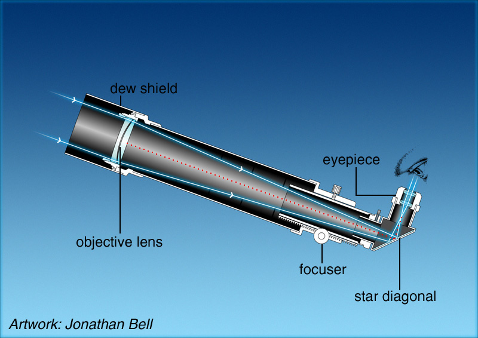

A refractor telescope is a type of telescope that uses lenses to focus light and form an image. The most common design for a refractor telescope is the long, narrow telescope tube with an objective lens at the front end, and an eyepiece at the back end. The objective lens gathers and focuses light, while the eyepiece magnifies the focused image. Refractor telescopes are known for their sharp, high-contrast images and are often used for astronomical observation and photography.
They are also known for their durability and low maintenance, as the lenses do not require frequent cleaning or alignment. However, they are generally more expensive than reflector telescopes of the same aperture size.
Here we will provide list of items and measurements for the telescope having a 90mm objective lens
* follow layout in the picture below ==>
